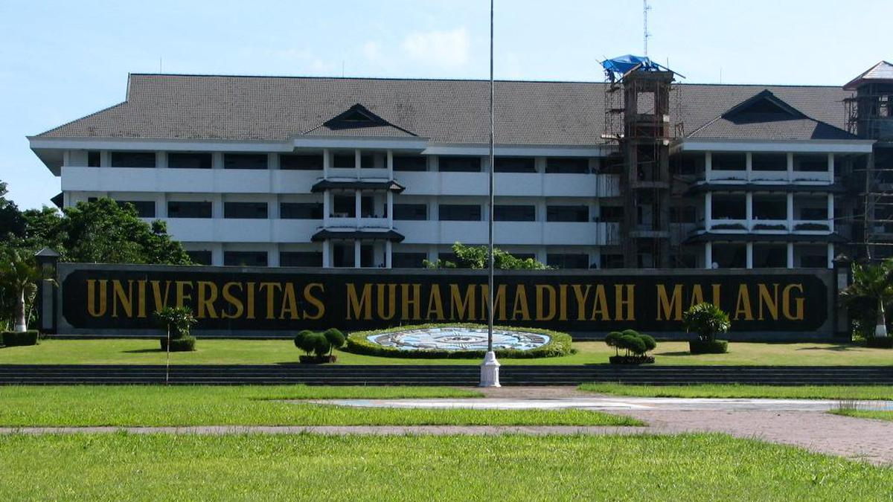
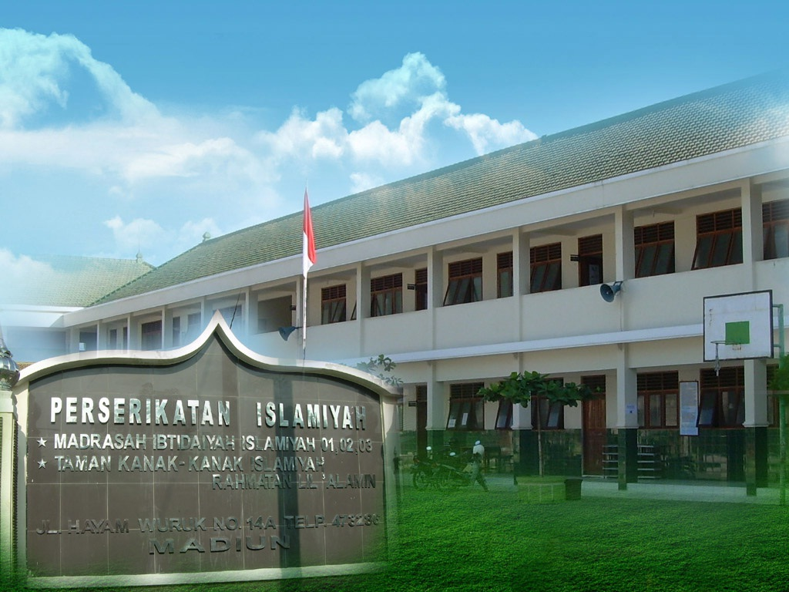

-

Universitas Muhammadiyah Malang
Malang
- Tahun masuk dan lulus: 2022 - sekarang
Saya mengambil jurusan Teknik Informatika di UMM. Selama di universitas, saya mengikuti beberapa kegiatan seperti UKM (Unit Kegiatan Mahasiswa) dan DSC (Data Sains Club). Dalam kegiatan tersebut, saya belajar mengenai kerja tim, manajemen waktu, dan komunikasi. Pengalaman ini membantu saya mengembangkan soft skills yang sangat berharga untuk karier saya di masa depan. Selain itu, saya juga mengikuti beberapa kursus yang diadakan oleh Dicoding guna meningkatkan hard skill saya
-

MAN 1 Kota Madiun
Madiun
- Tahun masuk dan lulus: 2019 - 2022
Saya mengambil jurusan IPA karena ketika nanti memilih jurusan untuk kuliah lebih mudah dan banyak pilihan. Saya mengikuti pelatihan Office Perkantoran tentang Ms. Word dan Ms. Excel yang diadakan oleh Lembaga Pendidikan Komputer, Bisnis, dan Manajemen MADCOMS. Selama di MAN saya pernah mengikuti lomba PROCOMMIT V10 yang diadakan oleh Institut Teknologi Sepuluh Nopember (ITS), meskipun belum berhasil memenangkan penghargaan, pengalaman ini memberikan memotivasi saya untuk belajar lebih baik. Selain itu, saya mengerjakan Tugas Akhir (TA) yang merupakan syarat kelulusan sekolah. Saya membuat video promosi pakaian menggunakan aplikasi Adobe Premier Pro lalu yang nantinya di upload ke youtube. Saya juga belajar mengedit foto menggunakan aplikasi Corel Draw.
-
SMPIT Bakti Ibu
Madiun
- Tahun masuk dan lulus: 2016 - 2019
Saya memulai perjalanan hafalan Al-Quran sejak SMP dan berhasil mendapatkan sertifikat terkait. Saya mengikuti extrakurikuler yaitu karate dan panahan. Saya pernah mengikuti kompetisi panahan meskipun tidak memenangkan salah satu dari mereka.
-

MI Islamiyah
Madiun
- Tahun masuk dan lulus: 2010 - 2016
Saat bersekolah di SD kelas 5, saya mengikuti East Java Scout Challange.